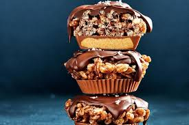

Chock-crackle Peanut butter cups

Description
With just five ingredients (and a pinch of salt), these choc-crackle peanut butter cups are quick, easy, fun and totally irresistible.
ingredients
- 75g white marshmallows
- 1 1/2 tbsp thickened cream
- 100g (2 cups) Kellogg's Coco Pops
- 6 x 42g pkts Reese's Peanut Butter Cups, paper cases removed
- 200g CADBURY Baking Dark Chocolate Melts
- Sea salt flakes, to serve
Steps
- Heat the marshmallows and cream in a small saucepan over low heat, stirring constantly, for 2-3 minutes or until the mixture is smooth and well combined.
Set aside for 2 minutes to cool slightly.
- Place the Coco Pops in a large bowl.
Add the marshmallow mixture and stir until the Coco Pops are well coated.
- Lightly grease twelve 40ml patty pans with oil spray. Place a Peanut Butter Cup in the base of each pan. Using 2 spoons, place the Coco Pop mixture on top, then use slightly wet hands to press down gently to compact.
Place in the fridge to set.
- Remove the choc-crackle cups from the pans and place on a wire rack.
- Place the dark chocolate melts in a microwave-safe bowl. Microwave on Medium, stirring every 30 seconds, for 2-3 minutes, until the chocolate is melted and smooth.
- Spoon the melted chocolate over the choc-crackle cups and sprinkle with sea salt flakes. Set aside to set.
Home